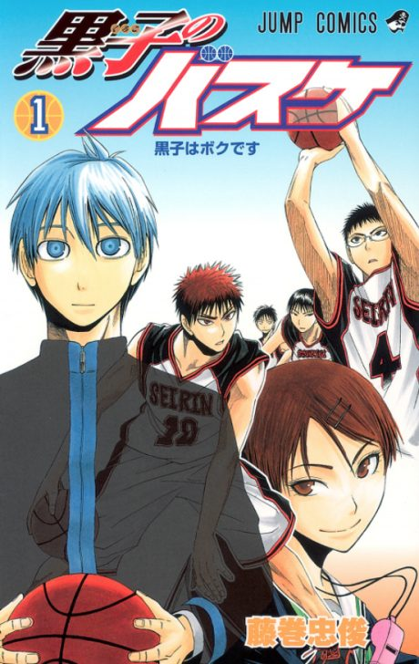

Kuroko's Basketball
黒子のバスケ
The anime takes the story to Done.
7.8AniList score
—Animeter, no votes yet
75episodes, 3 seasons
Is it worth pushing through?
Built from what visitors report across all 3 seasons (75 episodes).
Loading reports…Checking what other people said about this one.
Sign in above with your email to add your report.